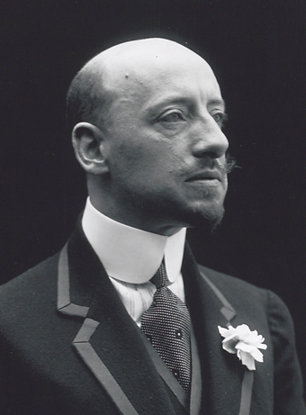
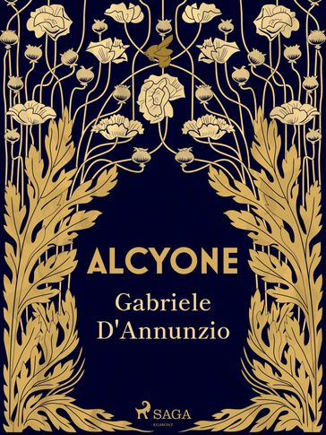

Gabriele D'Annunzio: L'Estetismo e il Panismo
Nel percorso di letteratura italiana svolto durante il quinto anno, lo studio di Gabriele D'Annunzio ha rappresentato un momento fondamentale per analizzare la risposta artistica alla crisi dell'uomo moderno. In un'epoca dominata dal progresso industriale e dalla razionalità scientifica, D'Annunzio reagisce rifiutando la banalità quotidiana attraverso l'esaltazione della bellezza, dell'arte e dell'istinto puro.
L'introduzione di D'Annunzio consente di esplorare il contrasto tra l'ascesa della società di massa e il disperato tentativo dell'intellettuale di distinguersi da essa. Portare questo autore permette di riflettere su come la letteratura del periodo abbia cercato di ridefinire il ruolo dell'uomo e dell'artista, oscillando tra il desiderio di dominare la realtà e l'inevitabile scoperta della propria fragilità interiore.
Cenni sulla Vita (1863 – 1938)
La biografia di D'Annunzio incarna l'ideale del "vivere inimitabile", in cui arte e azione politica si fondono continuamente:
- Il periodo romano: Nato a Pescara, si inserisce giovanissimo nei salotti mondani di Roma, conducendo una vita sfarzosa e aristocratica da dandy raffinato, durante la quale compone il suo primo grande romanzo.
- Il Superuomo e l'amore con la Duse: Influenzato dal pensiero di Nietzsche, elabora il mito del Superuomo, un individuo superiore destinato ad affermarsi tramite l'estetica e l'action. In Toscana vive una travolgente relazione con l'attrice Eleonora Duse, sua musa ispiratrice per le raccolte poetiche più celebri.
- L'azione militare e gli ultimi anni: Interventista nella Prima Guerra Mondiale, partecipa a imprese clamorose come il Volo su Vienna. Nel dopoguerra guida l'occupazione della città di Fiume. Conclude i suoi giorni nel monumentale isolamento della villa del Vittoriale degli Italiani.

Il Piacere (1889) — Il Manifesto dell'Estetismo
Il romanzo introduce in Italia la figura dell'esteta attraverso le vicende del protagonista, Andrea Sperelli, un nobile intellettuale guidato dalla massima di fare della propria vita un'opera d'arte. Andrea vive diviso tra l'attrazione per due donne opposte: Elena Muti, sensuale e distruttiva, e Maria Ferres, pura e spirituale. Il suo tentativo di sostituire Elena nei propri pensieri fallisce miseramente, lasciandolo solo, svuotato e sconfitto. L'opera non celebra l'esteta, ma ne descrive il fallimento morale e l'incapacità di relazionarsi con la realtà autentica.
Alcyone (1903) — Il Capolavoro Poetico e il Panismo
Considerato il vertice della lirica dannunziana, il terzo libro delle Laudi descrive una ideale estate trascorsa in Toscana. Il tema centrale è il Panismo, ovvero la fusione totale ed estatica dell'essere umano con gli elementi della natura. L'identità dell'uomo si dissolve nel paesaggio circostante, concetto espresso magistralmente nella celebre poesia "La Pioggia nel Pineto", dove i corpi del poeta e della donna amata (Ermione) si trasformano gradualmente in creature vegetali. In quest'opera il poeta, grazie alla sua sensibilità superiore, si fa interprete e tramite dei segreti nascosti della natura.
